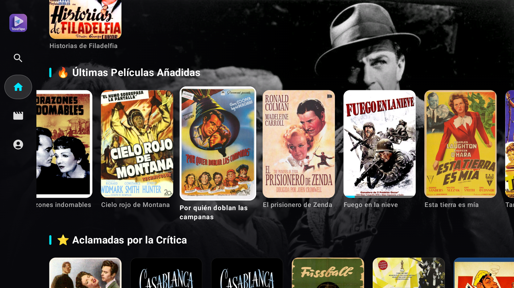
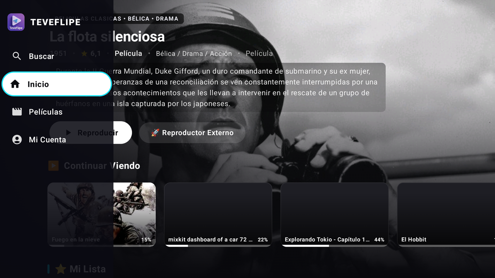
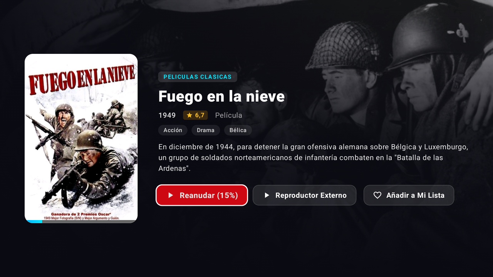
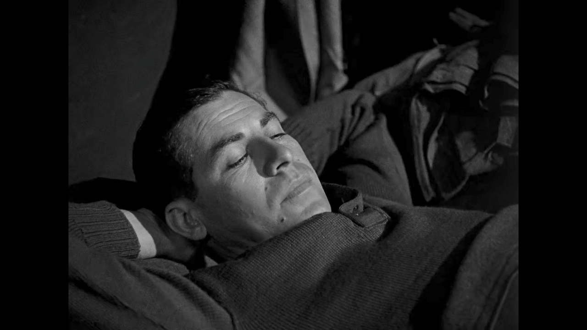

Tu nube de Telegram convertida en cine para el salón
TeveFlipe es un reproductor multimedia nativo para Android TV y Fire TV que se conecta a tu cuenta de Telegram. Reproduce tus colecciones, vídeos personales y archivos con carátulas automáticas y navegación fluida por mando.
Sin publicidad • Código libre comunitario • Inicio de sesión por código QR

Trae tu propio contenido: cliente privado de Telegram
TeveFlipe no aloja ni distribuye archivos propios. Es un reproductor cliente que lee directamente los canales, grupos privados y chats de tu cuenta personal utilizando el motor nativo TDLib.
Escaneo QR instantáneo
No tienes que escribir contraseñas ni números con el mando. Solo abres Telegram en tu móvil, vas a Dispositivos > Vincular y escaneas la pantalla.
Streaming en tiempo real
Sin ocupar el almacenamiento interno de tu televisor. El motor solicita los bloques de vídeo bajo demanda y los reproduce al vuelo sin descargar el archivo completo.
Metadatos automáticos
Tus archivos de vídeo se asocian con fichas técnicas, carátulas en alta definición, año de lanzamiento y sinopsis en español de forma transparente.
Colecciones y Vídeos Personales
Organiza tus grabaciones, archivos de vídeo y colecciones temáticas con la comodidad visual de una plataforma moderna.
Organización por Colecciones y Temas
Si agrupas tus vídeos en canales o grupos con temas habilitados, TeveFlipe estructura automáticamente cada volumen o sección en una ficha ordenada con selector secuencial de contenidos.
Salto continuo al siguiente vídeo
Al finalizar la reproducción, la app te permite continuar automáticamente con el siguiente vídeo de tu lista mediante un aviso con cuenta atrás interactiva en el mando.
Menú lateral cinemático
Barra de navegación lateral rápida con oscurecimiento ambiental que prioriza la imagen y permite alternar cómodamente entre Inicio, Películas, Favoritos y Ajustes.
Carátulas e información detallada
Búsqueda en segundo plano que enriquece tus archivos con fichas descriptivas, sinopsis en español, año de lanzamiento, géneros y fondos cinematográficos.
Diseñado para funcionar en dispositivos de 1 GB RAM
Muchos proyectores modernos (como los modelos Magcubic con procesadores Allwinner) y sticks de entrada como el Fire TV Stick Lite sufren cierres por falta de memoria con reproductores pesados. TeveFlipe incorpora protecciones nativas contra el Low Memory Killer.
En dispositivos con 1.5 GB de RAM o menos, las imágenes y carátulas se decodifican en formato RGB_565, ahorrando hasta un 50% de memoria gráfica frente a los 32 bits habituales.
Las filas del catálogo limitan la retención en memoria a 25 elementos por categoría, liberando recursos a medida que el usuario se desplaza con el mando.
Al cerrar la aplicación, el motor vacía los temporales de carátulas para evitar que los dispositivos con memorias flash de 8 GB o 16 GB se queden sin espacio disponible.
Capturas de pantalla en Android TV
Control 100% nativo con la cruceta del mando a distancia. Fluido, rápido y sin punteros de ratón.

Menú Lateral Cinemático
NavegaciónAcceso directo a Inicio, Películas, Mi Cuenta y Buscar, con atenuación de fondo y progreso de reproducción.
Catálogo y Filas Temáticas
ExploradorPósters en alta definición con foco de selección activo y fondo dinámico proyectado tras el catálogo.

Ficha Informativa Completa
DetallesSinopsis completa, año, puntuación, etiquetas de género, opción de reanudación exacta y reproductor externo.

Reproducción HD Fluida
PlayerStreaming continuo sin pausas ni cortes, aprovechando la aceleración de decodificación por hardware de tu TV.
Instalar en 2 minutos con la app Downloader
Compatible con Amazon Fire TV Stick, Xiaomi TV Box, Chromecast y Smart TVs Android.
Instala Downloader
Entra en la tienda de aplicaciones de tu televisor (Google Play Store o Amazon Appstore) y busca la app gratuita Downloader de AFTVnews.
Escribe el Código Downloader
Abre Downloader y teclea directamente este código numérico:
Escanea el código QR
Abre TeveFlipe en la tele. En tu móvil abre Telegram, ve a Ajustes > Dispositivos > Vincular dispositivo y enfoca la cámara a la pantalla.
Apoya el desarrollo de TeveFlipe
TeveFlipe es una aplicación comunitaria sin publicidad. Si disfrutas utilizándola en tu salón y deseas ayudar a cubrir los costes de mantenimiento y servidores de sincronización, puedes realizar una donación voluntaria.
Preguntas y Respuestas
Es compatible con cualquier televisor o reproductor con Android TV o Google TV (Sony, TCL, Xiaomi TV Box, Chromecast con Google TV), con toda la gama de Amazon Fire TV Stick (Lite, 4K, Max) y con proyectores con Android como los modelos Magcubic (L018 con chip Allwinner). No es compatible de forma directa con sistemas propietarios como LG webOS o Samsung Tizen (en esos casos se recomienda conectar un TV Stick por HDMI).
No. TeveFlipe es exclusivamente un software reproductor y cliente para la nube de Telegram (BYOC - Trae tu propio contenido). La aplicación reproduce las colecciones, vídeos personales, archivos y chats a los que tu propia cuenta de Telegram tenga acceso.
La aplicación incorpora un sistema de actualización OTA (Over-The-Air). Cuando se publica una versión nueva (como la v1.8.14), la app te notificará al iniciar y podrás descargar e instalar la actualización directamente desde la pantalla con un solo clic en el mando.
Para vídeos en 1080p recomendamos una conexión estable de al menos 15 a 20 Mbps. Para archivos en 4K con bitrates altos, lo óptimo son 35 a 50 Mbps. La reproducción se transmite directamente mediante streaming sin saturar el almacenamiento flash del televisor.